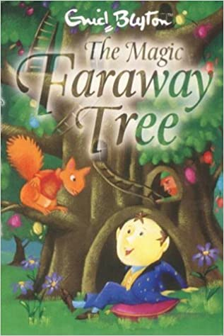
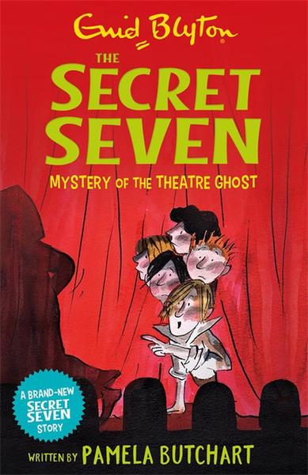
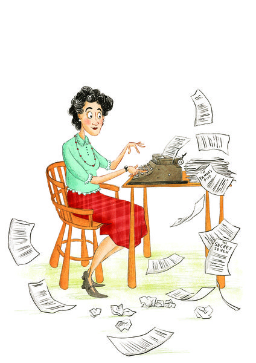
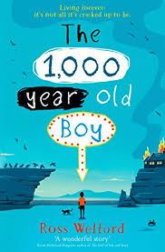

I am Yurzaan Doctor and I like to read
My Hobby:Reading
My favourite hobby is reading. I enjoy reading a book when I am free. I
started to do it when I was about four years old. The first time I did it, I felt interested. So I
kept reading. The teachers always taught me to read the difficult words. I was happy
when I read a story with a happy ending. I was thrilled when I read a detective story.
There are a lot of advantages of reading. Reading makes me feel relaxed and calm. I can also learn new vocabulary items. Then I can further improve my English. Moreover, it can give me
an unlimited imagination, so I can write books in the future. I can learn about the different
cultures and customs of other countries in the world too.
My Favourite Books

My favourite books are 'The Thousand Year Old Boy' and 'The Magical Faraway Tree'.
My Favourite Book Series

My favourite book series are 'The Secret Seven', 'The Famous Five' and 'Murdurous Maths'.
My Favourite Author

My favourite author is Enid Blyton
Book Reviews

Without death, life is just existence. Have you ever wondered what it would be like to live forever? Well, Alfie Monk can tell you. He may seem like an ordinary eleven-year-old boy, but he's actually more than a thousand years old--and remembers the last Viking invasion of England, not to mention the French Revolution and both World Wars. Way back in the tenth century, he and his mother were given the alchemical secret to eternal life. But when everything Alfie knows is destroyed in a fire, and the modern world intrudes, he must embark on a mission--along with his friends Aidan and Roxy--to find a way to reverse the process and grow up like a regular boy.